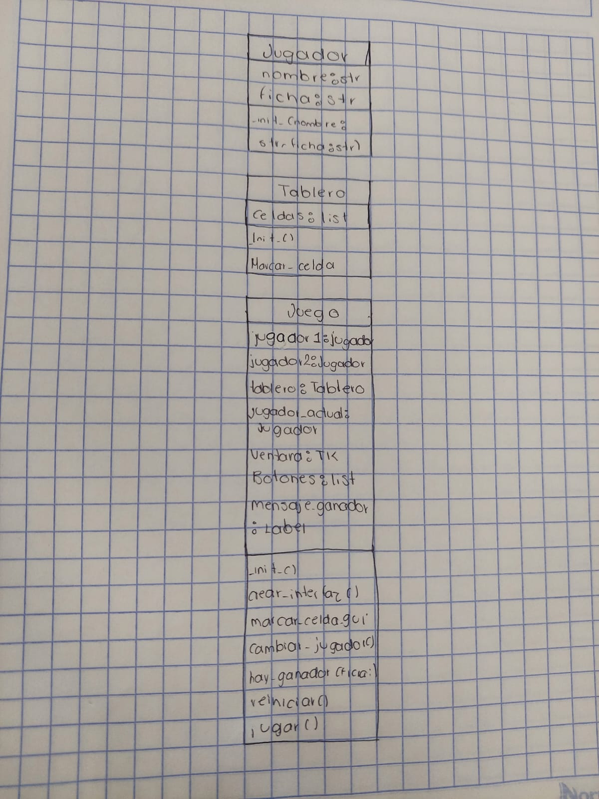

3 En Línea
Integrantes:
- Andrea Jacob Salas
- Asael Manuel Otero Reyes
- ¿De qué trata el juego?
-
El tres en raya es un juego de estrategia para dos jugadores que se disputa en un
tablero de 3x3 casillas. Cada jugador elige un símbolo, generalmente una "X" o un "O", y se
turnan para marcar una casilla vacía. Gana el primer jugador que logre alinear tres de
sus símbolos en línea recta, ya sea horizontal, vertical o diagonalmente. Si todas las
casillas se llenan sin que ningún jugador haya ganado, se considera un empate. Es un juego
sencillo pero que requiere pensar estratégicamente para anticipar los movimientos del oponente
y asegurar la victoria.
Implementación
- Para el juego de 3 en línea, se pensó en crear tres clases: JUGADOR, TABLERO y JUEGO.
-
En la clase JUGADOR se tienen como atributos los símbolos que se utilizan para representar a cada uno de los dos jugadores,
el símbolo "X" y el símbolo "O". Como métodos, se cuenta con el método turno(), que cuenta el número de clics
dados (en este juego son 9). El primer clic será con el símbolo "O" y el siguiente clic se le asignará el símbolo "X",
y así sucesivamente. Este método intercambia los símbolos en cada uno de los 9 clics.
-
Otro método en esta clase es realizar_jugada(). Este método se asegura de que el espacio seleccionado por el usuario sea
válido y que no sobrescriba otro símbolo ya colocado.
-
En la clase llamada JUEGO, se gestiona el jugador y el ganador. Los turnos se heredan de la clase Jugador, permitiendo que se pueda jugar. Esta clase hereda de Tablero.
-
El método iniciar_juego() es el encargado de que el tablero inicie con sus valores en 0, es decir, en blanco.
-
El método verificar_ganador(fila, columna) recibe como atributos fila y columna para que al momento de tomar un turno, este método haga
un recuento de cómo están distribuidos los símbolos y pueda checar los casos posibles de victoria. Si se cumple, imprime el mensaje "Gana: X" o "Gana: O".
-
El método empate() verifica que si al realizar los 9 clics no hay un ganador, entonces se imprime el mensaje "¡Empate!".
-
La siguiente clase se llama TABLERO, en la cual se recibe la longitud de las filas y columnas del juego. En este juego, son 3 líneas de 3
espacios, y lo mismo para las columnas.
-
Dentro de la clase, existe el método mostrar_tabla(), cuya función es que, por medio de un frame, pueda mostrar la estructura visual del juego (Tablero)
dividida conforme a la longitud de los atributos.
-
También existe la función colocar_simbolos(), que se encarga de que al hacer clic en la pantalla se muestre el símbolo "O" en el primer clic, y en el segundo clic se muestre el símbolo "X".
